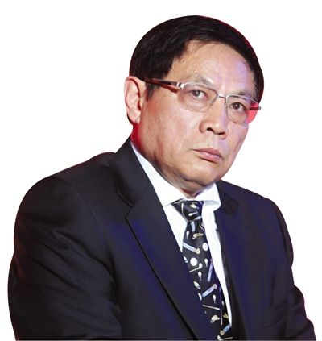

为什么说任志强是优秀共产党员的代表？
by 长沙杨飞
任大炮的话题很热门啊。关于党和政府主办的媒体是否应该姓党，我个人是这么看的：
1， 如果这家媒体是中国共产党主办的，其经费来自党费，它姓党就无可争议。
2，
政府主办的媒体也必须姓党，这个提法不妥。政府经费来自每一个纳税人，这些纳税人大多数是非党员。非党办媒体姓党，这等于是用非党经费来支持某一党派，涉嫌挪用国家财政。国家财政的钱要和党费严格分开，这是常识。
3，
即便党和政府主办的媒体都姓党，国内还是会有很多不姓党的媒体，比如联合早报、南华早报等，它们也在微博微信以及网络上出版。所有的境外媒体都不可能宣称自己“姓党”。还有很多自媒体，其作者也可能不是党员，经费也不是党费，他们很难都姓党。
4， 怎么正确定义“姓党”？我个人觉得，简单来说，为党好就是“姓党”。
5，
对一个人提出批评，就是为他好。对共产党好，最重要的不是天天表扬它，而是在它犯错的时候及时指出。举例来说，在文化大革命中，党中央的一系列做法背离了人民群众的利益，在这种情况下，抵制党中央的错误做法，对其展开严厉批评，乃是最佳的“姓党”方式。很遗憾文革十年全国的媒体都错误理解了什么是“姓党”，最后害人害己，差点亡党亡国。
6，
一个优秀共产党员如果要为党好，应该擦亮眼睛，经常给党提意见。只会唱赞歌表忠心者，乃是中国共产党危险的敌人。从这个角度来说，任志强是优秀党员的代表，而以文革大字报语言对任志强展开谩骂的千龙网主笔，乃是共产党最危险的敌人。
7，
没有人是神仙，中国共产党过去犯过错误，将来也会犯错，所以广开言路，虚心听取批评意见极为重要。应该做到有则改之无则加勉，否则未来堪忧。
8，
1978年两个凡是的教训必须牢记，切不可认为“凡是毛主席作出的决策，我们都坚决维护，凡是毛主席的指示，我们都始终不渝地遵循”。所以，不论党员还是非党员，都应该以独立思考作为最重要的考量，一切以人民的利益为出发点，切不可认为凡是党中央的指示都是对的。
9，
基于人性中恶的一面，美国国父和《独立宣言》起草人之一的托马斯•杰弗逊说过：“尘世中所有的政府都有人类弱点的印记，都有腐化和堕落的胚芽，其狡诈会显露，其邪恶会逐渐展现、蓄积和增强。。。”因此，“信赖我们自己选择的人，认为他会为我们的权力保障代言，这将是一种危险的幻想。”按照杰弗逊的说法，有良心有责任的媒体应该摆明态度：谁站在人民的对立面，我就反对谁，不管它是什么党，也不管它喊的口号多么动听。媒体唯有如此，才是中国共产党和中国人民真正的朋友。
杨飞，
2016年2月24日，长沙

关注老杨
杨飞作品集：www.midphoto.com
微信：yangfei789288
微信公众号：老杨书吧
新浪微博@长沙杨飞
推特Twitter@feiyang17
Facebook：yangfei999999@hotmail.com